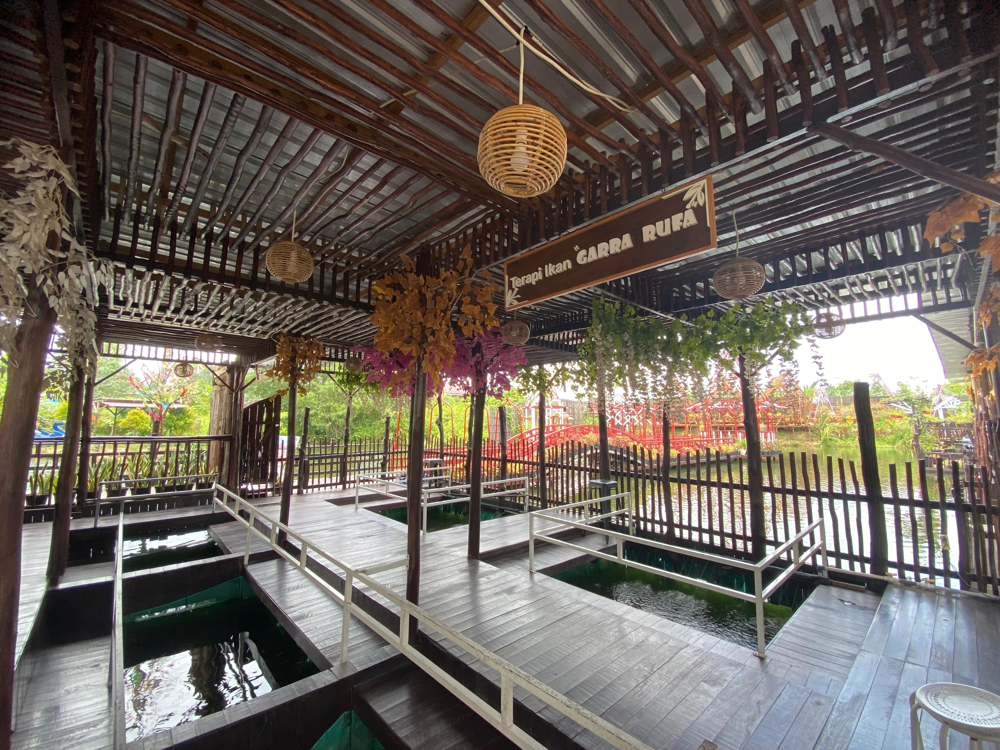

Terapi ikan
Ikan Nilem
Sensasi terapi seperti kaki terasa disetrum.
- 15 menit
- Rp20.000
- 30 menit
- Rp35.000
- 60 menit
- Rp60.000
Pengalaman relaksasi di Naureen Mini Garden
Pilih jenis ikan dan durasi terapi yang sesuai untuk menikmati pengalaman berbeda di taman.
Dua jenis terapi ikan
Naureen Mini Garden menyediakan terapi ikan berbayar dengan ikan nilem dan ikan gararuffa. Ikan nilem memberikan sensasi seperti kaki terasa disetrum, sedangkan ikan gararuffa memberikan sensasi seperti dipijat.

Terapi ikan
Sensasi terapi seperti kaki terasa disetrum.
Terapi ikan
Sensasi terapi seperti kaki dipijat.
Harga dan ketersediaan dapat berubah. Silakan konfirmasi langsung kepada admin sebelum berkunjung.